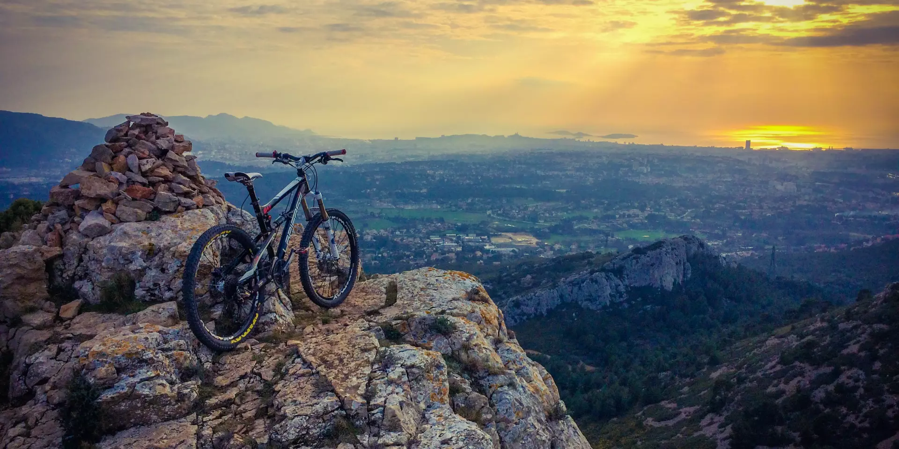

Randonnées Nature autour de Marseille
Bienvenue sur notre guide dédié aux passionnés de randonnée à Marseille, la ville où la nature méditerranéenne rencontre l'aventure pédestre. Que vous soyez un habitant local en quête d'évasion ou un visiteur désireux d'explorer les beautés naturelles de la région, Marseille offre une variété de sentiers captivants qui vous mèneront à travers des paysages exceptionnels.
Les Calanques : Un Trésor Naturel
Les Calanques, fierté de la région, sont une série de criques rocheuses magnifiques qui s'étendent le long de la côte méditerranéenne. Ces formations géologiques uniques offrent un terrain de randonnée diversifié, allant de sentiers côtiers offrant des vues imprenables sur la mer aux randonnées plus escarpées menant à des criques isolées. Parmi les itinéraires les plus populaires, citons la randonnée depuis Cassis jusqu'à Calanque d'En-Vau, offrant des panoramas à couper le souffle.
Parc National des Calanques
Explorez le premier parc national périurbain d'Europe, le Parc National des Calanques, qui s'étend sur plus de 500 kilomètres carrés. Des sentiers balisés vous guideront à travers des forêts de pins, des falaises calcaires et des panoramas marins éblouissants. Que vous soyez amateur de faune et de flore ou simplement à la recherche d'un bon exercice, ce parc national offre une expérience unique.
La Chaîne de l'Étoile
Pour une escapade plus montagneuse, tournez-vous vers la Chaîne de l'Étoile, située à l'arrière-pays de Marseille. Des sentiers bien entretenus serpentent à travers les collines, offrant des vues spectaculaires sur la ville et la mer au fur et à mesure de votre ascension. C'est l'endroit idéal pour les randonneurs cherchant à se perdre dans la nature sans s'éloigner trop de la ville.
Marseille offre une véritable aventure pour les amateurs de plein air. Que vous cherchiez une randonnée relaxante avec des vues imprenables ou une aventure plus intense à travers des terrains variés, les sentiers de Marseille sauront satisfaire votre soif d'exploration. Prenez votre équipement, sortez explorer, et découvrez la nature spectaculaire qui entoure cette ville méditerranéenne unique.
Liste des randonnées
-
Sentier des Calanques Holala cette randonnée. Vous m'en direz des nouvelles !
-
Massif de l'Etoile Mais attendez, celle-ci est encore bien mieux !
-
En vau PFFIOU ! Mais alors là c'est le top du top !